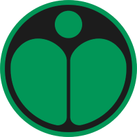

Qual tribo você faz parte?
Gentileza
Apoiador
Coragem
Criatividade
Empatia
Disciplina
Paz
Meio ambiente
Direitos
Tecnologia
liberdade
justiça
Bondade
Lutar pelo que acredita
Trabalho
Futuro
Expressão
Igualdade
Apaziguadora de conflitos
Melhor amiga dos animais
Que foca muito na vida profissional
Cria muitas coisas inovadoras
Que gosta de expressar o que pensa
Que acredita que todos somos iguais
Bondade
Amar todos os seres
Foco no trabalho
A criatividade e inovação
Suas maneiras de se expressar
Não vê diferença entre as pessoas
Lutar pela paz
Lutar por um futuro melhor
Lutar para não me preocupar com problemas
Usar a tecnologia para diminuir meus problemas
Poder expressar minha opinião sem medo de repressão
Lutar contra injustiças

Sua tribo é
KINDNESS PUNKS Você luta para o bem de todos, sempre garantindo a paz, seja no seu convivio social ou em chromatica, a sua cor é rosa.

Sua tribo é
ECO WARRIORS Você busca por equilibrio ecologico, não aceita todos os males que a humanidade já causou na terra e luta para reverter essa situação, dentro de chromatica sua função é cuidar da fauna e flora de chromatica, a sua cor é verde.
Sua tribo é
JUNKYARD SCAVENGERS É uma pessoa organizada, focada no trabalho e bastante ambiciosa, e não desiste facilmente, dentro de chromatica você luta pelos direitos de trabalho para os cidadãos, sua cor é preta.
Sua tribo é
CYBER KIDS Você sempre fica em constante evolução, é criativo e inovador, a tecnologia é a sua cara, dentro de chromatica sua função é ajudar o planeta a evoluir tecnologicamente, e a sua cor é amarela.
Sua tribo é
FREEDOM FIGHTERS Você é uma pessoa que gosta de liberdade, odeia sentir preso a algo, dentro de chromatica sua função é mannter a liberdade para que as pessoas sejam quem elas quiserem, sua cor é azul.Sua tribo é
GOVERNMENT OFFICIALS Você é uma pessoa que preza muito pela justiça, e apoia anigualdade social, isso condiz muito com a sua função dentro de chromatica, a sua cor é a vermelha.